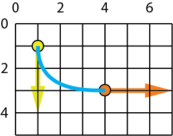

Page 4: Interpolation and Hermite Cubics
We say a curve interpolates a value if it takes that value given a certain value of its parameter. We call that value of the parameter the site. So, when we specify that a curve $\mathbf{f}(u)$ has value $\mathbf{p_0}$ at its beginning (i.e., $\mathbf{f}(0)=\mathbf{p_0}$), we would say “the curve interpolates $\mathbf{p_0}$ at site 0.”
When we specify interpolation, we might not specify the site - we might just specify that the curve has the value at some point in its range. Also, interpolation might specify the value of the derivative, not just the value of the value.
A common form of interpolation is to give a list of points that the curve should go through. We’ll discuss that in lecture. Here, we’ll focus on a specific type of interpolation. We often want to specify the beginning and end so we can make connections. Sometimes we also want to specify the derivatives at the beginning and end so that we can have continuity.
Hermite interpolation forms for Cubics
With a cubic, we have 4 coefficients we can control, so it should make sense that we can choose 4 things to specify and use those to determine the 4 coefficients. If we specify less than 4 things, there will be choices (it is under-determined). If we specify more than 4 things, we may not be able to meet them all.
With cubics, we may want to specify the positions and tangents (first derivatives) at the beginning and end of the segment. This gives us 4 values to specify (so it’s the right number). It is convenient since it allows sufficient control to get $C(1)$ continuity. We’ll talk about other things to specify below. But this form - value and 1st derivative at beginning and end - is sufficiently important that we will explore it carefully.
The idea of specifying a curve by its values (and derivatives) at its beginning and end is sometimes called Hermite interpolation. Charles Hermite was a French mathematician (I believe it is pronounced as “her meet” because the name is French so “i” sounds like “ee”, or, in French the “H” is not voiced, so maybe “err meet” to make my French teacher happy) who studied polynomials and interpolation. He has many things named after him.
The Hermite cubics we use in graphics are part of a general set of interpolating forms: we specify values that the curves have. With Hermite forms, we specify the values and derivatives for the curve at the beginning and end. We can have Hermite polynomials for different degrees. For example, a first degree Hermite polynomial is a line segment, where we specify the values at the ends. A quintic Hermite (5th degree) would specify the value and the first two derivatives at each end of the curve. In class, we will only consider cubics (and lines, but we’ve done them already).
For Hermite Cubics, we specify the value of the curve at the beginning, the value of the curve at the end, the first derivative (tangent vector) of the curve at the beginning, and the tangent vector (first derivative) of the curve at the end.
{kind=link}
Here we denote the first point as $\mathbf{p_0}$, the second point as $\mathbf{p_1}$, and their associated derivatives as $\mathbf{p’_0}$ and $\mathbf{p’_1}$. These are all specified values. We specify the derivative of the curve at the beginning and end.
Even though the derivatives are vectors, we still refer to them as control points. Since it is a cubic, it has 4 control points.
We can derive formulas for the coefficients (the $ \mathbf a_0, \mathbf a_1, \mathbf a_2, \mathbf a_3 $) from the Hermite control points. This is done in the book - but we won’t ask you to do these derivations in class.
Here are the equations:
$$\begin{aligned} f(u) = \mathbf p_0 & \ u^0 + \\ \mathbf p_0' & \ u^1 + \\ (-3 \mathbf p_0 -2 \mathbf p_0' + 3 \mathbf p_1 - \mathbf p_1') & \ u^2 + \\ (2 \mathbf p_0 + \mathbf p_0' -2 \mathbf p_1 + \mathbf p_1') & \ u^3 \\ \end{aligned}$$
Writing it out like this, it should be clear that $\mathbf a_0 = \mathbf p_0$, $\mathbf a_1 = \mathbf p_0'$, etc.
The book uses matrix notation for writing out these equations. The connection to matrix notation becomes clearer if we format the equation a little differently:
$$\begin{aligned} f(u) = ( 1\ &\mathbf p_0 + 0\ \mathbf p_0' + 0\ \mathbf p_1 + 0\ \mathbf p_1' ) \ u^0 + \\ ( 0\ &\mathbf p_0 + 1\ \mathbf p_0' + 0\ \mathbf p_1 + 0\ \mathbf p_1' ) \ u^1 + \\ (-3\ &\mathbf p_0 - 2\ \mathbf p_0' + 3\ \mathbf p_1 - 1\ \mathbf p_1' ) \ u^2 + \\ ( 2\ &\mathbf p_0 + 1\ \mathbf p_0' - 2\ \mathbf p_1 + 1\ \mathbf p_1' ) \ u^3 \\ \\ \end{aligned}$$
Which lets us write the equation as two matrix-vector multiplies:
$$f(u)= \begin{bmatrix} u^0 & u^1 & u^2 & u^3 \end{bmatrix} \begin{bmatrix} 1&0&0&0\\ 0&1&0&0\\ -3&-2&3&-1\\ 2&1&-2&1 \end{bmatrix} \begin{bmatrix} \mathbf p_0 \\ \mathbf p_0' \\ \mathbf p_1 \\ \mathbf p_1' \end{bmatrix}$$
This is one of the few times in class where we actually do a left-multiply of a row vector with a matrix.
Basis Functions
We can re-organize the equations from the previous box to group terms by control points, rather than by parameter powers. Note that this is just the equation above, just with the terms regrouped:
$$\begin{aligned} f(u) = (1-3u^2+2u^3) & \ \mathbf p_0 + \\ (u-2u^2+u^3) & \ \mathbf p_0' + \\ (3 u^2-2u^3) & \ \mathbf p_1 + \\ (-u^2+u^3) & \ \mathbf p_1' \end{aligned}$$
Notice that we now have a function of $u$ for each control point. We could re-write this as:
$$f(u) = b_0(u)\ \mathbf p_0 + b_1(u)\ \mathbf p_0' + b_2(u)\ \mathbf p_1 + b_3(u)\ \mathbf p_1'$$
These new functions are called basis functions.
Basis functions are a very convenient way to write curve equations.
Polynomial curves can be written as basis functions. Writing them this way makes it clear that we are taking a linear combination of the control points, where the amounts of the combination are determined by the (potentially non-linear) basis functions.
Practice with Hermites
To check that you can use this, try to compute the following:
Consider a cubic curve that has its beginning (i.e., $u=0$) at the point (1,1), and its end at the point (4,3). The derivative at the beginning is (0,3) and the derivative at the end is (3,0). Can you sketch what this curve looks like? We know where the curve starts, we know what direction the curve goes at the beginning, we know where the curve ends, and the know the direction it is going when it gets there. From this we can “sketch” - connecting these things, guessing what happens in between. Here is a sketch (and it is a sketch - when I created the curve I exaggerated the derivative magnitudes):
{kind=link}
Back in the days before online assignments and exams, we asked students to do a lot of curve sketching (remember pencil and paper?). It is important to have an intuition for what the curves should look like. It is a little tricker for Hermite curves because the scale of the derivative is not clear.
Since you probably peeked at my sketch before you tried the last one, here is another. The endpoints are the same (1,1) and (4,3), but the derivatives are (3,0) and (3,3). Draw a sketch.
It is too hard to collect your sketches in a workbook. What we can do is ask you to compute the value (position) of this curve at $u=0.5$. You’ll need to use the equations above. Notice that you don’t need to convert the curve to canonical form. You can just use the basis functions. Put your answer into 05-04-01.txt.
Other Cubic Forms?
The Hermite form - value and 1st derivative at both ends - is one convenient way to specify an interpolating cubic.
You might wonder - what about other options? Other things could work:
- Specify 4 points to interpolate ($u=0$, $u=1/3$, $u=2/3$, and $u=1$)
- Specify all the derivatives at the beginning
- Specify the first and second derivatives at the beginning and the positions at both ends
- Specify the positions at the beginning, end, and middle ($u=.5$), and the derivative at the middle
- And many others
All of these make nice practice problems for understanding how to derive curve forms. We used to do these in graphics class - but don’t worry, we won’t make you do the derivations now.
What is important is that a few forms turn out to be very useful. And we’ll just use those.
For interpolation Hermite forms are very useful because they give use nice control and easy $C(1)$ continuity (we can specify positions and derivative to match the neighboring segments).
If you’re wondering, curve #1 (interpolate 4 points) turns out to be less useful than Hermites. While it seems nice to specify 4 points to interpolate, it is more useful to be able to control the derivatives to get continuity. If we need to interpolate more points, we usually use more segments. On the next page we will learn about a way to adapt Hermite forms to do point interpolation. You can see a demo at at Cardinals 2: Understand Interpolation. (it is compared with Cardinal Splines, which we will explain on the next page). For now, you can try the “polunomial interpolation” - and note how when you move the points around, it is hard to control what happens between the points.
Interpolating More Points
Hermite cubic segments let us interpolate two points (the ends) with good control over the “shape” of the curve in between through specifying the derivatives.
If we have more than 2 points, we can connect multiple Hermite cubic segments together.
For example, to interpolate 3 points $\mathbf{p_0}$, $\mathbf{p_1}$, $\mathbf{p_2}$, we will create a cubic segment between each neighboring pair. Segment 1 will connect between $\mathbf{p_0}$ and $\mathbf{p_1}$, and segment 2 will connect between between $\mathbf{p_1}$ and $\mathbf{p_2}$. You can see this extends for any number of points.
This strategy of making a complicated chain (through many points) by linking simple pieces has many advantages. We can make the curve C(0) by matching the endpoints, and C(1) by matching the derivatives. Each piece is simple (it’s only a cubic). And each piece is independent - each segment only depends on its endpoints. Other parts of the curve (farther away) don’t matter. This is an important property that we call “locality”. (changes that you make only affect a local neighborhood around where you make the chain).
There are other strategies for making interpolating curves.
-
Cardinal Splines (described on the next page) are a variant of Hermite cuvres, but they conveniently compute the derivatives based on the positions of the points. We give up control for convenience. They are nice because they are C(1), they are local (each piece of the curve only depends on the 4 neighboring points), and they are relatively easy to understand. (yes, compared to other things, they are simple)
-
Higher order interpolation uses a higher order (degree) polynomial to fit through points. If you have $n$ points, you can fit an $n-1$ degree polynomial through it. This seems nice since it it just one polynomial (no switching) - but in practice, it is rarely used. The upside is that it has complete continuity (since there is no switching); but there are many downsides. The biggest one is that they are hard to control: they go through the points, but what happens in between points can be really complex. They are not local (all the points influence the entire curve), and they tend to have excess wiggles (I don’t know how to explain this technically). But, if you play with the demo you’ll see. There is also some mathematical messiness with higher order polynomials (trust me on this one).
-
Cubics can also be used to create a C(2) curve that interpolates a list of points. This is sometimes called a natural spline. It turns out that it has a physical analogy to how smooth curves were drawn before computers: if you take a piece of metal and bend it to pass through a set of points, it has this shape. We’ll discuss natural splines in lecture briefly, but they are tricky because they are not local. The shape of the curve at any parameter depends on all of the points. Natural cubic splines are described in 15.5.1 of the book. The book doesn’t mention that we typically prefer to specify derivatives at the beginning and end, which means we need to do some complicated math to figure things out.
I recommend that you experiment with the interpolation demo to appreciate why we like Cardinal Splines (and not higher-order polynomial interpolation) before going on to the next page to learn about them.
You might notice that there is no demo of natural splines: it turns out they are a bit tricky to implement. They “feel” similar to the polynomial interpolation (non-local), although they aren’t as horrifically wiggly.
Next: Cardinal Cubics and Interpolation